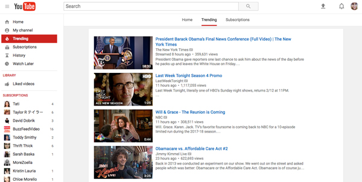

Blog 1- Thursday, January 12, 2017
First blog enterance!
Today, I will be analyzing a interface that I use on a daily basis.
The interface that I use the most would have to be YouTube.
It has a quite simple design that I would describe as practical and
User friendly. The set up of the YouTube homepage is quite traditional, in that it has a navigation bar on the left, a search bar at the top, the login on the top right, and the content in the remaining area. It seems as though they did not want to venture out to far into making a creative layout as to keep the
navigation simple for the users. They also stuck to a relatively basic color scheme-black, red, white, and blue. I believe that this was a good choice because the videos that appear on the site have a wide range of colors, and so their color scheme does not compete with any of the videos. I think YouTubes strategy of keeping it simple is effective because the most important thing for their site is for the user to be able to navigate easily through the videos they want to watch.
